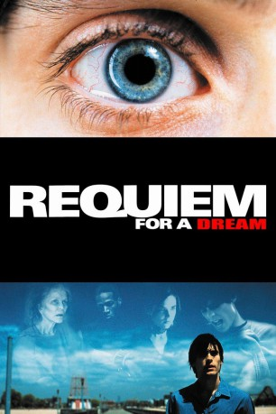

#1196 Requiem for a Dream
Auszeichnungen: für 1 Oscars nominiert
 
 IMDB-Wertung: 8.3 / 10
IMDB-Wertung: 8.3 / 10  IMDB-TOP-Platzierung: 83
IMDB-TOP-Platzierung: 83  Metascore: 68
Metascore: 68 
Eine Schar von Verlierern: Harry ist ein kleiner Dealer in Brooklyn, immer auf der Suche nach dem nächsten Schuß und voller Hoffnung auf das große Geld. Er und sein Freund Tyrone strecken Heroin und sind auf dem Weg nach Florida, um es dort an den Mann zu bringen. Harrys Freundin Marion bleibt in New York. Sie ist schön, aus gutem Haus - und ebenfalls hoffnungslos süchtig. Mit dem Dealer Big Tim tauscht sie Sex gegen Dope. Harrys Mutter hingegen scheint einen Treffer gelandet zu haben: Sie ist als Kandidatin für ihre Lieblings-TV-Show eingeladen. Bis zu ihrem Auftritt möchte sie mit Hilfe von Appetitzüglern abnehmen. Doch durch ihren Pillenkonsum verliert sie völlig den Kontakt zur Realität ...
Jahr: 2000
Dauer: 102 Minuten
FSK: 16
Land: USA Studio: Artisan EntertainmentTonspuren: DTS - ,
Untertitel:
Auflösung: 1080p (1920x1080) Größe: 10444 MB
Genre: Drama
Regisseur: Darren Aronofsky
Drehbuch: Hubert Selby Jr., Hubert Selby Jr., Darren Aronofsky
Soundtrack: Clint Mansell
Darsteller:
 Ellen Burstyn als Sara Goldfarb
Ellen Burstyn als Sara Goldfarb Jared Leto als Harry Goldfarb
Jared Leto als Harry Goldfarb Jennifer Connelly als Marion Silver
Jennifer Connelly als Marion Silver Marlon Wayans als Tyrone C. Love
Marlon Wayans als Tyrone C. Love Christopher McDonald als Tappy Tibbons
Christopher McDonald als Tappy Tibbons- Louise Lasser als Ada
 Marcia Jean Kurtz als Rae
Marcia Jean Kurtz als Rae Suzanne Shepherd als Mrs. Scarlini
Suzanne Shepherd als Mrs. Scarlini Mark Margolis als Mr. Rabinowitz
Mark Margolis als Mr. Rabinowitz Jack O'Connell als Corn Dog Stand Boss
Jack O'Connell als Corn Dog Stand Boss Ajay Naidu als Mailman
Ajay Naidu als Mailman- Sean Gullette als Arnold The Shrink
- Samia Shoaib als Nurse Mall
 Peter Maloney als Dr. Pill
Peter Maloney als Dr. Pill Denise Dowse als Tyrone's Mother
Denise Dowse als Tyrone's Mother- James Chinlund als Space Oddity
 Olga Merediz als Malin & Block Secretary
Olga Merediz als Malin & Block Secretary Ben Shenkman als Dr. Spencer
Ben Shenkman als Dr. Spencer Keith David als Big Tim
Keith David als Big Tim Dylan Baker als Southern Doctor
Dylan Baker als Southern Doctor Shaun O'Hagan als Ward Attendant Seto
Shaun O'Hagan als Ward Attendant Seto Bill Buell als Court Doctor
Bill Buell als Court Doctor Gregg Bello als E.R. Doctor
Gregg Bello als E.R. Doctor- Heather Litteer als Big Tim Party Girl
- Ami Goodheart als Big Tim Party Girl
- Nina Zavarin als Big Tim Party Girl
 Stanley B. Herman als Uncle Hank
Stanley B. Herman als Uncle Hank- Ben Cohen als Party Animal
- Lianna Pai als Angelic Nurse
- Diana Berry als Malin & Block Executive , uncredited
- John Bryant als Drug Dealer , uncredited
- Janet Sarno als Mrs. Pearlman
- Joanne Gordon als Mrs. Ovadia
- Charlotte Aronofsky als Mrs. Miles
- Michael Kaycheck als Donut Cop
- Chas Mastin als Lyle Russel
- Abraham Abraham als King Neptune
- Aliya Campbell als Alice
- Te'ron A. O'Neal als Young Tyrone
- Bryan Chattoo als Brody
- Eddie De Harp als Brody's Henchman Victor
- Scott Franklin als Voice of Jailer
- Peter Cheyenne als Sal the Geep
- Brian Costello als First AD
- Abraham Aronofsky als Newspaper Man on Train
- Allison Furman als Malin & Block Office Woman
- Robert Dylan Cohen als Paramedic Greenhill
- Leland Gantt als Ward Attendant Penn
 Jimmie Ray Weeks als Prison Guard
Jimmie Ray Weeks als Prison Guard- Henry Stram als ECT Technician
Datei: X:\2000\Requiem for a Dream (2000, FSK16, 1920x1080).mkv seit 02.06.2015
Festplatte: HD 1996-2002
 Es gibt insgesamt 82 Filme in der Gruppe '2000'
Es gibt insgesamt 82 Filme in der Gruppe '2000'